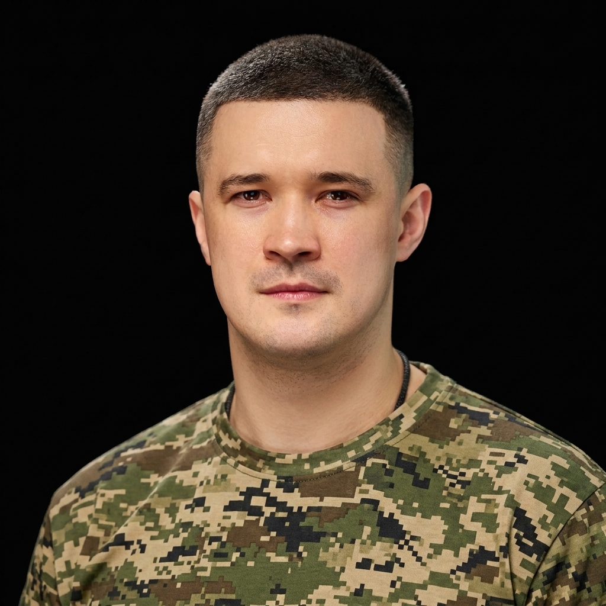

Оберіть вашого Водія
Володимир «Zеточка»
Насправді він Президент, а бусіки водить так, для душі.
Почуття гумору: 9/10
Знання фронту: 7/10
Інтелект: 5/10
Міша «Самогон»
Лебігович - справжній депутат народу. І неймовірний водій бусіків.
Знання Аудиторії: 10/10
Запах перегару: 8/10
Улюблений виконавець: Надя Дорофєєва

Михайло Федорович
Справжній слуга народу - зразу після відставки подався водієм бусіків.
Знання законодавста: 9/10
Логіка: 5/10
Стаж: 2/10